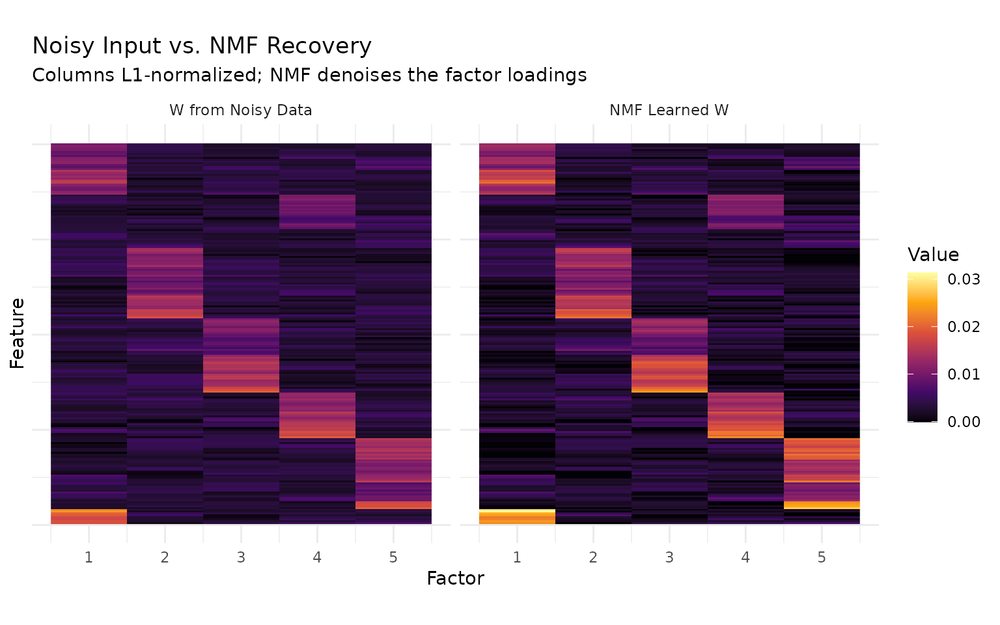
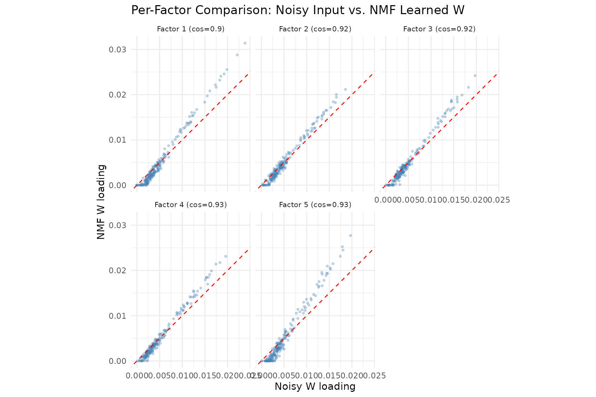
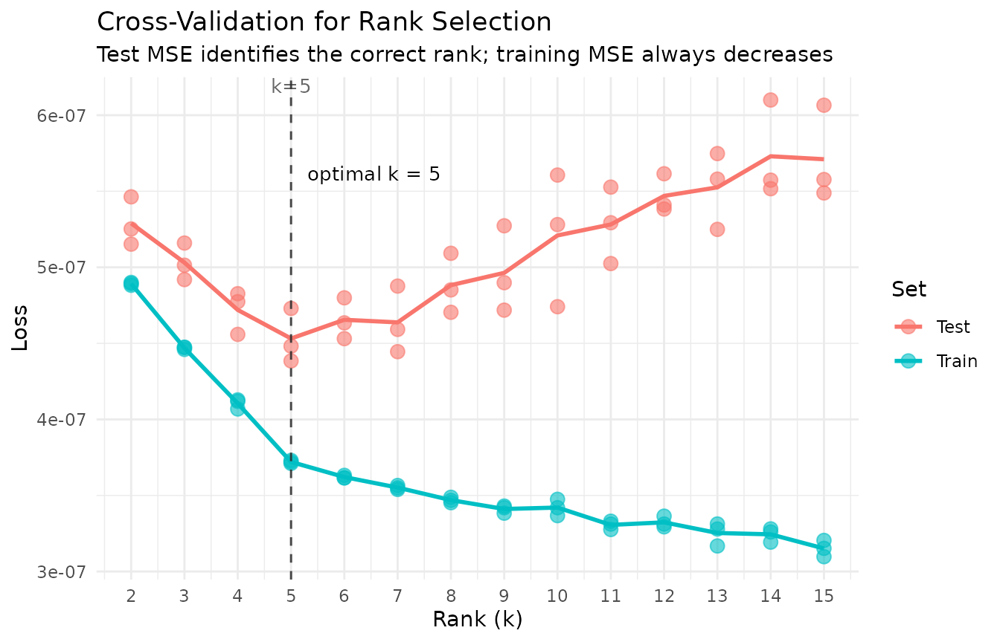
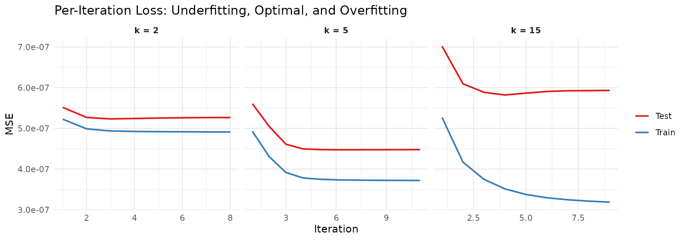
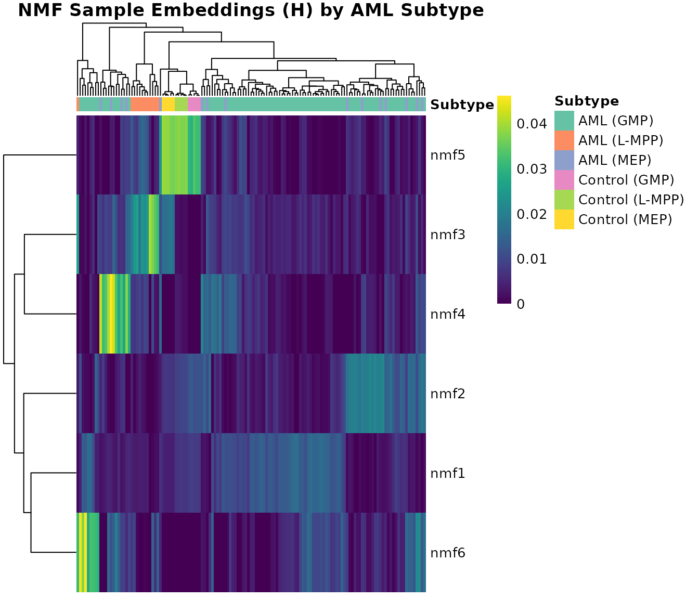
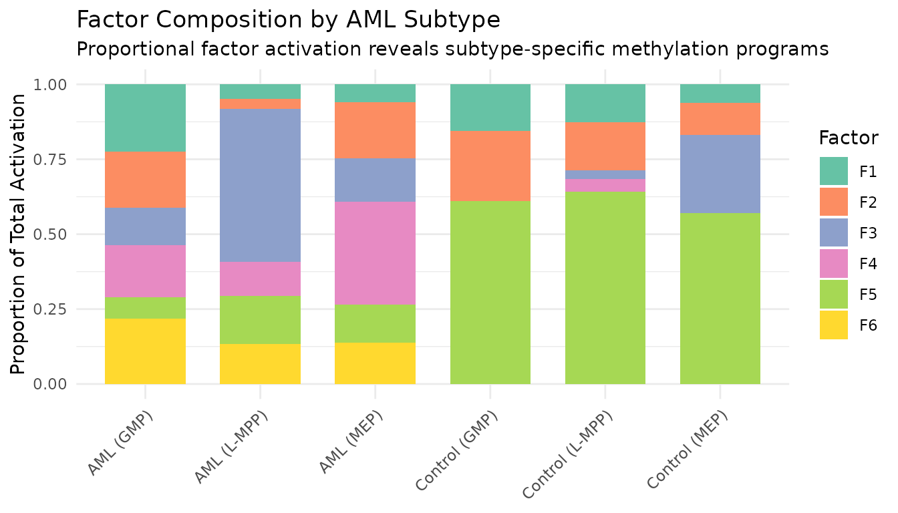
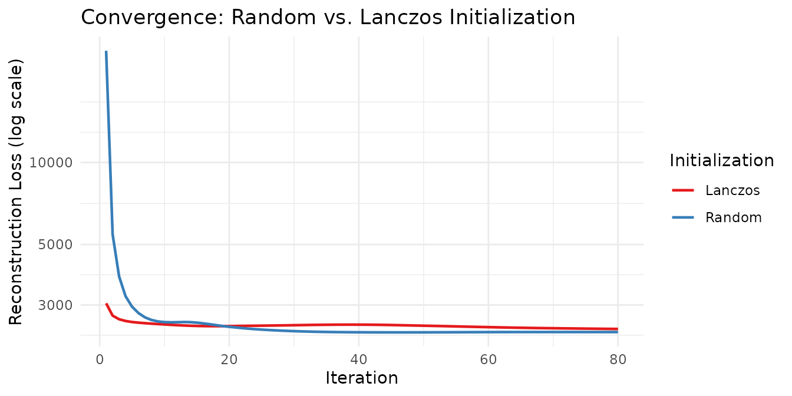

Motivation
How can we decompose a nonnegative matrix into interpretable parts? Non-negative Matrix Factorization (NMF) answers this by finding additive, parts-based representations: each factor captures a distinct pattern, and all weights are nonneg, so factors combine constructively. Unlike PCA, where components can cancel each other out, NMF factors are always additive — making them directly interpretable as “parts” of the data.
NMF is widely used in topic modeling, image decomposition, gene expression analysis, and recommendation systems. RcppML provides a high-performance implementation with a distinctive factorization, where the diagonal scaling makes factors comparable and ordered by importance.
API Reference
The nmf() Function
nmf(data, k, tol = 1e-4, maxit = 100, seed = NULL,
L1 = c(0, 0), L2 = c(0, 0),
mask = NULL, loss = "mse",
nonneg = c(TRUE, TRUE),
verbose = FALSE, ...)Key parameters:
| Parameter | Type | Default | Description |
|---|---|---|---|
data |
matrix/dgCMatrix | — | Nonneg input matrix (features × samples) |
k |
integer | — | Factorization rank (number of factors) |
tol |
numeric | 1e-4 | Convergence tolerance (correlation-distance) |
maxit |
integer | 100 | Maximum iterations |
seed |
int/matrix/string | NULL | Random seed, init matrix, or method (“lanczos”, “irlba”) |
mask |
NULL/“zeros”/dgCMatrix | NULL | Observation mask for fitting |
loss |
character | “mse” | Loss function: “mse” or distribution-based (see
?nmf) |
nonneg |
logical(2) | c(TRUE, TRUE) | Non-negativity constraints on W and H |
Advanced parameters passed via ...:
| Parameter | Default | Description |
|---|---|---|
norm |
“L1” | Factor normalization: “L1”, “L2”, or “none” |
sort_model |
TRUE | Sort factors by decreasing |
threads |
0 | Number of OpenMP threads (0 = auto) |
on_iteration |
NULL | Callback receiving (iter, train_loss, test_loss) |
Initialization options (passed via seed):
| Method | Description |
|---|---|
NULL or integer |
Random nonneg initialization (default). May need more iterations to converge. |
"lanczos" |
SVD-based warm start via Lanczos iteration. Often converges faster. |
"irlba" |
SVD-based warm start via IRLBA. Memory-efficient for large sparse matrices. |
| matrix | User-supplied W initialization matrix. |
Normalization options:
| Method | Description |
|---|---|
"L1" |
Columns of W and rows of H sum to 1 (default). Scales stored in . |
"L2" |
Unit L2 norm for columns of W and rows of H. |
"none" |
No normalization; is all ones. |
Normalization and regularization interaction: L1 regularization is applied after normalization at each iteration. With
norm = "L1", factor columns are rescaled to sum to 1 before L1 soft-thresholding. This means the effective penalty depends on the normalization mode; the same L1 value produces different sparsity levels under L1 vs. L2 normalization. Start withnorm = "L1"(default) when using L1 regularization.
Factor Extraction and Inspection
The nmf() function returns an S4 object of class
nmf with slots accessed via $:
-
model@wormodel$w— feature loading matrix (W) -
model@hormodel$h— sample embedding matrix (H) -
model@dormodel$d— length- diagonal scaling vector -
model@misc— metadata list (iterations, runtime, loss, etc.) -
dim(model)— returnsc(m, n, k) -
head(model, n)— first factors -
model[i]— subset to specific factor indices
The canonical S4 accessor is @ (e.g.,
model@w). The $ shorthand also works due to
method dispatch.
Reconstruction and Loss
-
prod(model)— reconstructs (dense matrix) -
evaluate(model, data)— reconstruction loss (defaults to MSE regardless of what loss was used for fitting; specifyevaluate(model, data, loss = "gp")to compute loss with the same distribution used for fitting) -
mse(model$w, model$d, model$h, data)— standalone MSE computation
Model Comparison
-
align(model, ref)— reorder factors to match a reference model (Hungarian algorithm) -
sparsity(model)— fraction of near-zero entries in W and H -
cosine(x, y)— column-wise cosine similarity between matrices -
bipartiteMatch(cost_matrix)— Hungarian algorithm for optimal factor pairing (returns 0-indexed$assignment)
Convergence Control
-
tolcontrols the convergence threshold. The model converges when the maximum change in any factor (measured by correlation distance) falls belowtol. -
maxitprovides a hard iteration cap. -
on_iterationaccepts a callbackfunction(iter, train_loss, test_loss)called after each iteration.
Theory and Algorithms
Objective
NMF solves the constrained optimization problem:
where is an nonneg matrix, is , is , and is a length- scaling vector.
Alternating NNLS
RcppML uses alternating non-negative least squares: fix H, solve for
W; fix W, solve for H. After each full iteration, columns of W and rows
of H are normalized and the scales absorbed into
.
This diagonal scaling makes factors directly comparable and ordered by
importance when sort_model = TRUE.
Initialization
Random initialization gives a noisy starting point that may require more iterations. SVD-based methods (Lanczos, IRLBA) compute a truncated SVD as a warm start, typically converging faster — especially for well-conditioned data.
Non-uniqueness
NMF solutions are not unique: different seeds lead to different local
optima. Always set seed for reproducibility. For robust
factorizations across multiple random starts, use
consensus_nmf() (see the Clustering vignette).
Projective NMF
In standard NMF, both W and H are solved independently in alternating updates. Projective NMF adds a structural constraint: instead of solving for H, it is computed as a linear projection of the data through W:
This means H is entirely determined by W — there are no free
parameters in H. Enable it with projective = TRUE:
model <- nmf(data, k = 6, projective = TRUE)Why use projective NMF?
- More orthogonal features: The projection constraint forces W columns to be nearly orthogonal, because the only way to minimize reconstruction error when is for the columns of W to capture non-overlapping parts of the data.
- Fewer degrees of freedom: Since H is determined by W, the model has roughly half as many free parameters, acting as an implicit regularizer.
- Unique H for a given W: Eliminates one source of non-uniqueness in the factorization.
The tradeoff is higher reconstruction error — the model is more constrained, so it cannot fit the data as closely. Projective NMF is most useful when you want clearly separable, non-overlapping factors for interpretability rather than minimum reconstruction error.
data(aml)
m_std <- nmf(aml, k = 6, seed = 42, tol = 1e-5)
m_proj <- nmf(aml, k = 6, seed = 42, tol = 1e-5, projective = TRUE)
# Orthogonality: mean absolute off-diagonal cosine between W columns
# (lower = more orthogonal)
ortho_metric <- function(mat) {
cs <- cosine(mat, mat)
diag(cs) <- 0
mean(abs(cs))
}
knitr::kable(data.frame(
Mode = c("Standard", "Projective"),
`W orthogonality` = round(c(ortho_metric(m_std@w), ortho_metric(m_proj@w)), 3),
`W mean sparsity` = round(c(mean(sparsity(m_std)$sparsity[1:6]),
mean(sparsity(m_proj)$sparsity[1:6])), 3),
`Reconstruction MSE` = format(c(evaluate(m_std, aml), evaluate(m_proj, aml)),
digits = 3, scientific = TRUE),
check.names = FALSE
), caption = "Standard vs. projective NMF on AML data (k = 6). Lower W orthogonality = more independent factors.")| Mode | W orthogonality | W mean sparsity | Reconstruction MSE |
|---|---|---|---|
| Standard | 0.583 | 0.082 | 2.15e-02 |
| Projective | 0.188 | 0.454 | 4.13e-01 |
Projective NMF yields W columns that are substantially more orthogonal (lower off-diagonal cosine), making each factor correspond to a more distinct set of features. This comes at the cost of reconstruction fidelity — the projection constraint prevents the model from fitting the data as tightly.
Note:
projective = TRUEandsymmetric = TRUEcannot be combined. For symmetric matrices (), symmetric NMF enforces directly.
Worked Examples
Example 1: Recovering Known Factors from Synthetic Data
We generate a synthetic matrix with 5 true factors and test whether NMF can recover them.
sim <- simulateNMF(200, 80, k = 5, noise = 3.0, seed = 42)
model <- nmf(sim$A, k = 5, seed = 1, tol = 1e-5, maxit = 100)To compare learned factors with ground truth, we compute cosine
similarity between each pair of W columns. The
bipartiteMatch() function finds the optimal one-to-one
assignment (note: it returns 0-indexed assignments):
sim_cos <- cosine(model$w, sim$w)
match_result <- bipartiteMatch(1 - sim_cos + 1e-10)
assignment <- match_result$assignment + 1L # convert to 1-indexed
per_factor_cos <- sapply(seq_len(5), function(i) {
sim_cos[i, assignment[i]]
})
knitr::kable(
data.frame(
Factor = 1:5,
`Cosine Similarity` = round(per_factor_cos, 4),
check.names = FALSE
),
caption = "Per-factor cosine similarity between learned and true W columns."
)| Factor | Cosine Similarity |
|---|---|
| 1 | 0.9040 |
| 2 | 0.9207 |
| 3 | 0.9178 |
| 4 | 0.9327 |
| 5 | 0.9271 |
Factor recovery quality depends on the signal-to-noise ratio, matrix
size, and the degree of overlap between true factors. Here we use
noise = 3.0, meaning the noise amplitude is three times the
signal — a challenging setting. Despite this, NMF recovers all five
factors with high cosine similarity, demonstrating robustness to
additive noise.
# Align learned W to true W using bipartite matching
learned_w <- model$w
# Compute noisy W: least-squares projection of A onto true H (shows noise corruption)
noisy_w <- as.matrix(sim$A %*% t(sim$h) %*% solve(sim$h %*% t(sim$h)))
noisy_w <- noisy_w[, assignment]
# L1-normalize columns so both heatmaps share the same [0, 1] scale
l1_norm <- function(mat) sweep(mat, 2, colSums(abs(mat)), "/")
noisy_w <- l1_norm(noisy_w)
learned_w <- l1_norm(learned_w)
# Hierarchical clustering on the combined matrix for consistent row/col order
combined_w <- cbind(noisy_w, learned_w)
row_hc <- hclust(dist(combined_w))
row_ord <- row_hc$order
col_hc <- hclust(dist(t(noisy_w)))
col_ord <- col_hc$order
noisy_w <- noisy_w[row_ord, col_ord]
learned_w <- learned_w[row_ord, col_ord]
# Build long-format data for ggplot
make_heatmap_df <- function(mat, label) {
df <- expand.grid(Feature = seq_len(nrow(mat)), Factor = seq_len(ncol(mat)))
df$Value <- as.vector(mat)
df$Source <- label
df
}
hm_df <- rbind(
make_heatmap_df(noisy_w, "W from Noisy Data"),
make_heatmap_df(learned_w, "NMF Learned W")
)
hm_df$Source <- factor(hm_df$Source, levels = c("W from Noisy Data", "NMF Learned W"))
ggplot(hm_df, aes(x = Factor, y = Feature, fill = Value)) +
geom_raster() +
facet_wrap(~Source) +
scale_fill_viridis_c(option = "inferno") +
labs(title = "Noisy Input vs. NMF Recovery",
subtitle = "Columns L1-normalized; NMF denoises the factor loadings",
x = "Factor", y = "Feature") +
theme_minimal() +
theme(aspect.ratio = 1,
axis.text.y = element_blank(), axis.ticks.y = element_blank())
The left panel shows the factor loadings recovered by projecting the noisy data matrix onto the true H — the noise substantially degrades the block structure. The right panel shows NMF’s learned W, where block-diagonal structure is clearly recovered. NMF acts as a denoiser: by jointly optimizing W and H, it separates signal from noise more effectively than direct projection.
# Per-factor scatter plots: noisy vs. learned W column values
scatter_df <- do.call(rbind, lapply(1:5, function(i) {
data.frame(
Noisy = noisy_w[, i],
Learned = learned_w[, i],
Factor = paste0("Factor ", i, " (cos=", round(per_factor_cos[i], 2), ")")
)
}))
ggplot(scatter_df, aes(x = Noisy, y = Learned)) +
geom_point(alpha = 0.3, size = 0.8, color = "steelblue") +
geom_abline(slope = 1, intercept = 0, linetype = "dashed", color = "red") +
facet_wrap(~ Factor, nrow = 2) +
coord_fixed() +
labs(title = "Per-Factor Comparison: Noisy Input vs. NMF Learned W",
x = "Noisy W loading", y = "NMF W loading") +
theme_minimal() +
theme(strip.text = element_text(size = 8))
The scatter plots compare noisy input loadings (x-axis) to NMF-recovered loadings (y-axis) for each factor. NMF sharpens the loadings — points are pulled toward the axes, reflecting the non-negativity constraint’s tendency to suppress noise and produce sparser, more interpretable factors. The cosine similarity in each panel title measures agreement with the true (clean) factors.
Example 2: Choosing Rank with Cross-Validation
In Example 1, we knew the true rank because we generated the data. In practice, the correct rank is unknown. Cross-validation provides a principled answer: hold out a random fraction of matrix entries, fit NMF on the remainder, and measure prediction error on the held-out set. The rank that minimizes test error is the best choice.
cv <- nmf(sim$A, k = 2:15, test_fraction = 0.05, cv_seed = 1:3,
tol = 1e-5, maxit = 200)
agg <- aggregate(test_mse ~ k, data = cv, FUN = mean)
best_k <- agg$k[which.min(agg$test_mse)]
plot(cv) +
geom_vline(xintercept = best_k, linetype = "dashed", alpha = 0.5) +
annotate("text", x = best_k + 0.3, y = max(agg$test_mse) * 0.98,
label = paste("optimal k =", best_k), hjust = 0, size = 3.5) +
labs(
title = "Cross-Validation for Rank Selection",
subtitle = "Test MSE identifies the correct rank; training MSE always decreases"
) +
theme_minimal()
The plot reveals the classic bias–variance tradeoff:
- Underfitting (): Both training and test MSE are high. The model lacks capacity to capture all five true factors, so it cannot represent the data’s structure and performs poorly on both seen and unseen entries.
- Optimal rank (): Test MSE reaches its minimum. The model has exactly enough factors to capture the true structure without fitting noise.
- Overfitting (): Training MSE continues to decrease — the model fits the training entries ever more closely — but test MSE increases. Extra factors fit noise in the training set that does not generalize to held-out entries.
How it works:
nmf(data, k = 1:15, test_fraction = 0.2)randomly masks 20% of matrix entries before fitting. At each iteration the model is trained only on the visible 80%; the masked entries are predicted from the current and scored against their true values. The rank with the lowest test MSE is selected.
Per-Iteration Convergence: Underfitting vs. Overfitting
The cross-rank plot above shows which is best. Now we look inside individual fits to see how training and test loss evolve iteration by iteration. This reveals the dynamics of overfitting in real time.
iter_data <- do.call(rbind, lapply(c(2, 5, 15), function(k) {
m <- nmf(sim$A, k = k, seed = 1, tol = 1e-10, maxit = 100, test_fraction = 0.05, resource = "cpu")
n <- length(m@misc$loss_history)
data.frame(
Iteration = rep(1:n, 2),
MSE = c(m@misc$loss_history, m@misc$test_loss_history),
Set = rep(c("Train", "Test"), each = n),
Rank = factor(paste0("k = ", k), levels = paste0("k = ", c(2, 5, 15)))
)
}))
ggplot(iter_data, aes(x = Iteration, y = MSE, color = Set)) +
geom_line(linewidth = 0.8) +
facet_wrap(~ Rank, scales = "free_x") +
scale_color_manual(values = c("Train" = "#377EB8", "Test" = "#E41A1C")) +
scale_y_continuous(labels = function(x) sprintf("%.1e", x)) +
labs(
title = "Per-Iteration Loss: Underfitting, Optimal, and Overfitting",
x = "Iteration", y = "MSE", color = NULL
) +
theme_minimal() +
theme(strip.text = element_text(face = "bold"))
Three distinct behaviors emerge:
- k = 2 (underfitting): Both training and test loss decrease smoothly and converge together. However, they plateau at a level well above the optimal test error — the model simply cannot represent all five factors with only two components.
- k = 5 (optimal): Both losses decrease rapidly and converge near the lowest achievable test error. Training and test losses track each other closely, indicating the model generalizes well.
- k = 15 (overfitting): Training loss continues to fall, but test loss reaches a minimum early and then increases as the model iterates further. The excess factors memorize training-set noise at the expense of held-out prediction.
The combination of the cross-rank plot (which to choose) and the per-iteration traces (why that choice matters) provides a complete picture of rank selection in NMF.
Example 3: Methylation Factor Interpretation (AML Data)
The aml dataset contains 824 differentially methylated
regions (DMRs) × 135 samples from an Acute Myeloid Leukemia study.
Features are genomic coordinate ranges (e.g.,
chr1:847816-848609) representing CpG-dense regions with
methylation beta values. Sample subtypes are stored in
attr(aml, "metadata_h")$category.
Since AML features are genomic coordinate ranges (e.g.,
chr1:847816-848609) rather than gene names, a table of top
loadings per factor is not directly interpretable without external
annotation databases. Instead, we visualize the H matrix (sample
embeddings) — where the factor structure maps directly to AML subtypes —
using pheatmap, which handles clustering and annotation
alignment automatically:
library(pheatmap)
H <- model_aml$h
subtypes <- meta$category
# pheatmap needs unique column identifiers for annotation mapping
colnames(H) <- paste0("S", seq_len(ncol(H)))
anno_col <- data.frame(Subtype = subtypes, row.names = colnames(H))
# Define subtype colors
subtype_levels <- sort(unique(subtypes))
subtype_colors <- setNames(
RColorBrewer::brewer.pal(max(3, length(subtype_levels)), "Set2")[seq_along(subtype_levels)],
subtype_levels
)
pheatmap(H,
annotation_col = anno_col,
annotation_colors = list(Subtype = subtype_colors),
cluster_cols = TRUE,
cluster_rows = TRUE,
show_colnames = FALSE,
color = viridis::viridis(100),
main = "NMF Sample Embeddings (H) by AML Subtype",
fontsize = 10)
The H heatmap reveals clear subtype structure: pheatmap
hierarchically clusters both rows (factors) and columns (samples), then
aligns the subtype annotation bar with the clustered column order
automatically. Certain factors activate preferentially within specific
AML subtypes, indicating that NMF captures biologically meaningful
methylation programs.
# Stacked bar chart: mean factor activation by subtype
H <- model_aml$h
subtypes <- meta$category
mean_H <- sapply(unique(subtypes), function(s) {
rowMeans(H[, subtypes == s, drop = FALSE])
})
colnames(mean_H) <- unique(subtypes)
bar_df <- do.call(rbind, lapply(colnames(mean_H), function(s) {
data.frame(Subtype = s, Factor = paste0("F", 1:nrow(mean_H)),
Activation = mean_H[, s])
}))
ggplot(bar_df, aes(x = Subtype, y = Activation, fill = Factor)) +
geom_col(position = "fill", width = 0.7) +
scale_fill_brewer(palette = "Set2") +
labs(title = "Factor Composition by AML Subtype",
subtitle = "Proportional factor activation reveals subtype-specific methylation programs",
y = "Proportion of Total Activation", x = NULL) +
theme_minimal() +
theme(axis.text.x = element_text(angle = 45, hjust = 1))
The stacked bar chart provides a complementary view to the heatmap: each subtype’s bar shows the relative contribution of each factor, making subtype-specific factor dominance immediately visible.
Example 4: Convergence and Initialization Comparison
We compare random vs. Lanczos initialization by tracking loss per
iteration using the on_iteration callback:
# Track loss over iterations via callback
track_loss <- function() {
losses <- numeric(0)
callback <- function(iter, train_loss, test_loss) {
losses[iter] <<- train_loss
}
list(callback = callback, get = function() losses)
}
tracker_random <- track_loss()
model_random <- nmf(aml, k = 6, seed = 42, tol = 1e-6,
maxit = 80, on_iteration = tracker_random$callback, resource = "cpu")
tracker_lanczos <- track_loss()
set.seed(42)
model_lanczos <- nmf(aml, k = 6, seed = "lanczos", tol = 1e-6,
maxit = 80, on_iteration = tracker_lanczos$callback, resource = "cpu")
loss_random <- tracker_random$get()
loss_lanczos <- tracker_lanczos$get()
convergence_df <- rbind(
data.frame(Iteration = seq_along(loss_random), Loss = loss_random, Init = "Random"),
data.frame(Iteration = seq_along(loss_lanczos), Loss = loss_lanczos, Init = "Lanczos")
)
knitr::kable(
data.frame(
Initialization = c("Random", "Lanczos"),
Iterations = c(length(loss_random), length(loss_lanczos)),
`Final Loss` = round(c(tail(loss_random, 1), tail(loss_lanczos, 1)), 4),
check.names = FALSE
),
caption = "Convergence comparison: random vs. Lanczos initialization on AML data."
)| Initialization | Iterations | Final Loss |
|---|---|---|
| Random | 80 | 2386.559 |
| Lanczos | 80 | 2449.652 |
ggplot(convergence_df, aes(x = Iteration, y = Loss, color = Init)) +
geom_line(linewidth = 0.8) +
scale_y_log10() +
scale_color_brewer(palette = "Set1") +
labs(
title = "Convergence: Random vs. Lanczos Initialization",
x = "Iteration", y = "Reconstruction Loss (log scale)", color = "Initialization"
) +
theme_minimal()
Lanczos initialization starts from a better initial point (SVD-based warm start) and typically reaches a low loss in fewer iterations, while random initialization requires more iterations to reach a comparable solution.
A note on local minima: NMF is a non-convex problem, so every initialization converges to a local minimum. SVD-based initializations deterministically find a single good starting point, but that point may sit in a basin that is not globally optimal. Running many random initializations samples a wider landscape and can discover better local minima that the SVD path misses entirely. In practice, a common strategy is to run several random restarts and keep the solution with the lowest loss.
Next Steps
- Deep-dive on cross-validation: Example 2 introduced rank selection on synthetic data. See the Cross-Validation vignette for real-data workflows, repeated CV, and sparse vs. dense masking strategies.
- Non-Gaussian data: Count data, ratings, and overdispersed data need distribution-aware NMF. See the Distributions vignette.
- Factor structure: Control sparsity, smoothness, and other factor properties. See the Regularization vignette.